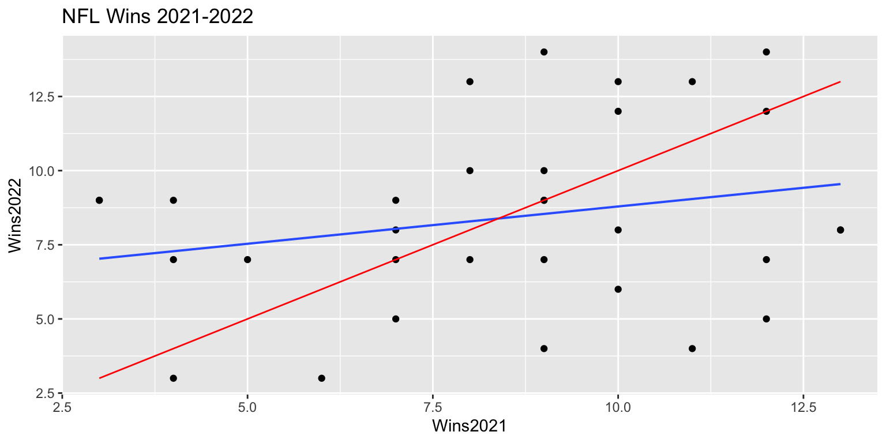

Chapter 6 Building Models for Interpretation
Learning Outcomes:
- Explain the differences in the ways we construct statistical models when we are focused primarily on interpretation.
- Describe the ways that multicollinearity influences the interpretability of regression models.
- Recognize situations where confounding and Simpson’s paradox might influence conclusions we draw from a model, and make appropriate interpretations in these situations.
- Evaluate the appropriateness of models using plots of residuals vs explanatory variables.
- Recognize when it is appropriate to use polynomials or other nonlinear functions in a statistical model, and interpret corresponding estimates of regression coefficients.
- Decide which variables to include in a statistical model, and justify your decision.
6.1 Modeling SAT Score
6.1.1 Overview of Model Building
So far, we’ve dealt with models with 2 or fewer variables. Often, we want to use more complex models.
We’ll need to decide how many variables to include in the model. This is not an obvious decision, and will be different, depending on the purpose of the model.
We’ll also need to make other decisions, such as whether or not to use interaction terms, or transformations.
In this chapter, we’ll focus on building models for situations when we want to make interpretations and draw conclusions about relationships between our explanatory and response variables.
In Chapter 7, we focus on modeling for the purpose of prediction, when we are not interested in making interpretations or conclusions about relationships between variables.
6.1.2 Considerations in Modeling
When building a model for the purpose of consideration, we’ll need to think about things like:
- which explanatory variables should we include in the model, and how many?
- should we include any interaction terms?
- should we use any nonlinear terms?
- should we use a transformation of the response variable?
We’ll go through a couple example to see how we can address these questions in building a model.
Keep in mind, there is no single correct model, but there are common characteristics of a good model. While two statisticians might use different models for a given set of data, they will hopefully lead to reasonably similar conclusions if constructed carefully.
6.1.3 SAT Scores Dataset
We’ll now look at a dataset containing education data on all 50 states. It includes the following variables.
state - a factor with names of each state
expend - expenditure per pupil in average daily attendance in public elementary and secondary schools, 1994-95 (in thousands of US dollars)
ratio - average pupil/teacher ratio in public elementary and secondary schools, Fall 1994
salary - estimated average annual salary of teachers in public elementary and secondary schools, 1994-95 (in thousands of US dollars)
frac - percentage of all eligible students taking the SAT, 1994-95
sat - average total SAT score, 1994-95
## Rows: 50
## Columns: 6
## $ state <fct> Alabama, Alaska, Arizona, Arkansas, California, Colorado, Conne…
## $ expend <dbl> 4.405, 8.963, 4.778, 4.459, 4.992, 5.443, 8.817, 7.030, 5.718, …
## $ ratio <dbl> 17.2, 17.6, 19.3, 17.1, 24.0, 18.4, 14.4, 16.6, 19.1, 16.3, 17.…
## $ salary <dbl> 31.144, 47.951, 32.175, 28.934, 41.078, 34.571, 50.045, 39.076,…
## $ frac <int> 8, 47, 27, 6, 45, 29, 81, 68, 48, 65, 57, 15, 13, 58, 5, 9, 11,…
## $ sat <int> 1029, 934, 944, 1005, 902, 980, 908, 897, 889, 854, 889, 979, 1…6.1.4 Teacher Salaries and SAT Scores
The plot displays average SAT score against average teacher salary for all 50 US states.
ggplot(data=SAT, aes(y=sat, x=salary)) + geom_point() +
stat_smooth(method="lm", se=FALSE) +
ggtitle("Average SAT score vs Average Teacher Salary") +
xlab("Average Teacher Salary in Thousands") 
What conclusion do you draw from the plot?
Are these results surprising?
6.1.5 Simple Linear Regression Model
##
## Call:
## lm(formula = sat ~ salary, data = SAT)
##
## Residuals:
## Min 1Q Median 3Q Max
## -147.125 -45.354 4.073 42.193 125.279
##
## Coefficients:
## Estimate Std. Error t value Pr(>|t|)
## (Intercept) 1158.859 57.659 20.098 < 0.0000000000000002 ***
## salary -5.540 1.632 -3.394 0.00139 **
## ---
## Signif. codes: 0 '***' 0.001 '**' 0.01 '*' 0.05 '.' 0.1 ' ' 1
##
## Residual standard error: 67.89 on 48 degrees of freedom
## Multiple R-squared: 0.1935, Adjusted R-squared: 0.1767
## F-statistic: 11.52 on 1 and 48 DF, p-value: 0.0013916.1.6 A Closer Look
Let’s break the data down by the percentage of students who take the SAT.
Low = 0%-22%
Medium = 22-49%
High = 49-81%
6.1.7 A Closer Look
ggplot(data=SAT, aes( y=sat, x=salary )) +geom_point() + facet_wrap(facets = ~fracgrp) +
stat_smooth(method="lm", se=FALSE) + xlab("Average Teacher Salary in Thousands")
Now what conclusions do you draw from the plots?
6.1.8 Multiple Regression Model
##
## Call:
## lm(formula = sat ~ salary + frac, data = SAT)
##
## Residuals:
## Min 1Q Median 3Q Max
## -78.313 -26.731 3.168 18.951 75.590
##
## Coefficients:
## Estimate Std. Error t value Pr(>|t|)
## (Intercept) 987.9005 31.8775 30.991 < 0.0000000000000002 ***
## salary 2.1804 1.0291 2.119 0.0394 *
## frac -2.7787 0.2285 -12.163 0.0000000000000004 ***
## ---
## Signif. codes: 0 '***' 0.001 '**' 0.01 '*' 0.05 '.' 0.1 ' ' 1
##
## Residual standard error: 33.69 on 47 degrees of freedom
## Multiple R-squared: 0.8056, Adjusted R-squared: 0.7973
## F-statistic: 97.36 on 2 and 47 DF, p-value: < 0.00000000000000022For each one thousand dollar increase in average teacher salary, a state’s average SAT score is expected to increase by 2.18 points, assuming percentage of students taking the test is the same.
For each one percent increase in percentage of students taking the SAT, a state’s average score is expected to decrease by 2.78 points, assuming average teacher salary is the same.
6.1.9 Add Other Variables?
Let’s see what other possible explanatory variables we might want to add to the model. We’ll
## expend ratio salary frac sat
## expend 1.00 -0.37 0.87 0.59 -0.38
## ratio -0.37 1.00 0.00 -0.21 0.08
## salary 0.87 0.00 1.00 0.62 -0.44
## frac 0.59 -0.21 0.62 1.00 -0.89
## sat -0.38 0.08 -0.44 -0.89 1.006.1.10 Add Student-to-Teacher Ratio
##
## Call:
## lm(formula = sat ~ salary + frac + ratio, data = SAT)
##
## Residuals:
## Min 1Q Median 3Q Max
## -89.244 -21.485 -0.798 17.685 68.262
##
## Coefficients:
## Estimate Std. Error t value Pr(>|t|)
## (Intercept) 1057.8982 44.3287 23.865 <0.0000000000000002 ***
## salary 2.5525 1.0045 2.541 0.0145 *
## frac -2.9134 0.2282 -12.764 <0.0000000000000002 ***
## ratio -4.6394 2.1215 -2.187 0.0339 *
## ---
## Signif. codes: 0 '***' 0.001 '**' 0.01 '*' 0.05 '.' 0.1 ' ' 1
##
## Residual standard error: 32.41 on 46 degrees of freedom
## Multiple R-squared: 0.8239, Adjusted R-squared: 0.8124
## F-statistic: 71.72 on 3 and 46 DF, p-value: < 0.000000000000000226.1.11 Add Expendatures
##
## Call:
## lm(formula = sat ~ salary + frac + ratio + expend, data = SAT)
##
## Residuals:
## Min 1Q Median 3Q Max
## -90.531 -20.855 -1.746 15.979 66.571
##
## Coefficients:
## Estimate Std. Error t value Pr(>|t|)
## (Intercept) 1045.9715 52.8698 19.784 < 0.0000000000000002 ***
## salary 1.6379 2.3872 0.686 0.496
## frac -2.9045 0.2313 -12.559 0.000000000000000261 ***
## ratio -3.6242 3.2154 -1.127 0.266
## expend 4.4626 10.5465 0.423 0.674
## ---
## Signif. codes: 0 '***' 0.001 '**' 0.01 '*' 0.05 '.' 0.1 ' ' 1
##
## Residual standard error: 32.7 on 45 degrees of freedom
## Multiple R-squared: 0.8246, Adjusted R-squared: 0.809
## F-statistic: 52.88 on 4 and 45 DF, p-value: < 0.000000000000000226.1.12 Confidence Intervals
Confidence intervals for model involving teacher salary, percentage taking the test, and student-to-teacher ratio.
## 2.5 % 97.5 %
## (Intercept) 968.6691802 1147.1271438
## salary 0.5304797 4.5744605
## frac -3.3727807 -2.4539197
## ratio -8.9098147 -0.3690414Confidence intervals for model with above variables plus expendature.
## 2.5 % 97.5 %
## (Intercept) 939.486374 1152.456698
## salary -3.170247 6.446081
## frac -3.370262 -2.438699
## ratio -10.100417 2.851952
## expend -16.779204 25.704393Question What happened to the confidence interval associated with teacher salary? How might we explain this? (Hint: think about how to interpret estimates/confidence intervals in multiple regression)
6.1.13 Residual Plots for SAT 3-variable Model
Let’s return to the model with salary, ratio, and fraction taking test.
We use residual plots to assess model assumptions.
P1 <- ggplot(data=data.frame(SAT_M3$residuals), aes(y=SAT_M3$residuals, x=SAT_M3$fitted.values)) + geom_point() + ggtitle("Residual Plot") + xlab("Predicted Values") + ylab("Residuals")
P2 <- ggplot(data=data.frame(SAT_M3$residuals), aes(x=SAT_M3$residuals)) + geom_histogram() + ggtitle("Histogram of Residuals") + xlab("Residual")
P3 <- ggplot(data=data.frame(SAT_M3$residuals), aes(sample = scale(SAT_M3$residuals))) + stat_qq() + stat_qq_line() + xlab("Normal Quantiles") + ylab("Residual Quantiles") + ggtitle("QQ Plot")
grid.arrange(P1, P2, P3, ncol=3)
There is some sign of a quadratic trend in the residual plot, creating concern about the linearity assumption.
6.1.14 Plots of Residuals Against Predictors
We can plot our residuals against the explanatory variables to see whether the model is properly accounting for relationships involving each variable. If we see nonlinear trends, we should consider adding a nonlinear function of that explanatory variable.
P1 <- ggplot(data=data.frame(SAT_M3$residuals), aes(y=SAT_M3$residuals, x=SAT_M3$model$salary)) + geom_point() + ggtitle("Residual by Predictor Plot") + xlab("Salary") + ylab("Residuals")
P2 <- ggplot(data=data.frame(SAT_M3$residuals), aes(y=SAT_M3$residuals, x=SAT_M3$model$frac)) + geom_point() + ggtitle("Residual by Predictor Plot") + xlab("Fraction Taking Test") + ylab("Residuals")
P3 <- ggplot(data=data.frame(SAT_M3$residuals), aes(y=SAT_M3$residuals, x=SAT_M3$model$ratio)) + geom_point() + ggtitle("Residual by Predictor Plot") + xlab("Student to Teach Ratio") + ylab("Residuals")
grid.arrange(P1, P2, P3, ncol=3)
There is also a quadratic trend in the plot involving the fraction variable.
6.1.15 Model Using Frac^2
##
## Call:
## lm(formula = sat ~ salary + frac + I(frac^2) + ratio, data = SAT)
##
## Residuals:
## Min 1Q Median 3Q Max
## -66.09 -15.20 -4.64 15.06 52.77
##
## Coefficients:
## Estimate Std. Error t value Pr(>|t|)
## (Intercept) 1039.21242 36.28206 28.643 < 0.0000000000000002 ***
## salary 1.80708 0.83150 2.173 0.0351 *
## frac -6.64001 0.77668 -8.549 0.0000000000555 ***
## I(frac^2) 0.05065 0.01025 4.942 0.0000111676728 ***
## ratio -0.04058 1.96174 -0.021 0.9836
## ---
## Signif. codes: 0 '***' 0.001 '**' 0.01 '*' 0.05 '.' 0.1 ' ' 1
##
## Residual standard error: 26.38 on 45 degrees of freedom
## Multiple R-squared: 0.8858, Adjusted R-squared: 0.8757
## F-statistic: 87.28 on 4 and 45 DF, p-value: < 0.000000000000000226.1.16 Residual Plots for Quadratic SAT Model
P1 <- ggplot(data=data.frame(SAT_M5$residuals), aes(y=SAT_M5$residuals, x=SAT_M5$fitted.values)) + geom_point() + ggtitle("Residual Plot") + xlab("Predicted Values") + ylab("Residuals")
P2 <- ggplot(data=data.frame(SAT_M5$residuals), aes(x=SAT_M5$residuals)) + geom_histogram() + ggtitle("Histogram of Residuals") + xlab("Residual")
P3 <- ggplot(data=data.frame(SAT_M5$residuals), aes(sample = scale(SAT_M5$residuals))) + stat_qq() + stat_qq_line() + xlab("Normal Quantiles") + ylab("Residual Quantiles") + ggtitle("QQ Plot")
grid.arrange(P1, P2, P3, ncol=3)6.1.17 Model with Linear Term on Frac
##
## Call:
## lm(formula = sat ~ salary + frac + ratio, data = SAT)
##
## Residuals:
## Min 1Q Median 3Q Max
## -89.244 -21.485 -0.798 17.685 68.262
##
## Coefficients:
## Estimate Std. Error t value Pr(>|t|)
## (Intercept) 1057.8982 44.3287 23.865 <0.0000000000000002 ***
## salary 2.5525 1.0045 2.541 0.0145 *
## frac -2.9134 0.2282 -12.764 <0.0000000000000002 ***
## ratio -4.6394 2.1215 -2.187 0.0339 *
## ---
## Signif. codes: 0 '***' 0.001 '**' 0.01 '*' 0.05 '.' 0.1 ' ' 1
##
## Residual standard error: 32.41 on 46 degrees of freedom
## Multiple R-squared: 0.8239, Adjusted R-squared: 0.8124
## F-statistic: 71.72 on 3 and 46 DF, p-value: < 0.000000000000000226.1.18 Interpretations for Model with Linear Terms
On average, a $1,000 dollar increase in average teacher salary is associated with a 2.5 point increase in average SAT score assuming fraction of students taking the SAT, and student to teacher ratio are held constant.
On average, a 1% increase in percentage of students taking the SAT is associated with a 2.9 point decrease in average SAT score assuming average teacher salary, and student to teacher ratio are held constant.
On average, a 1 student per teacher increase in student to teacher ratio is associated with a 4.6 point from in average SAT score, assuming average teacher salary, and percentage of students taking the SAT are held constant.
6.1.19 Model with Quadratic Term on Frac
##
## Call:
## lm(formula = sat ~ salary + frac + I(frac^2) + ratio, data = SAT)
##
## Residuals:
## Min 1Q Median 3Q Max
## -66.09 -15.20 -4.64 15.06 52.77
##
## Coefficients:
## Estimate Std. Error t value Pr(>|t|)
## (Intercept) 1039.21242 36.28206 28.643 < 0.0000000000000002 ***
## salary 1.80708 0.83150 2.173 0.0351 *
## frac -6.64001 0.77668 -8.549 0.0000000000555 ***
## I(frac^2) 0.05065 0.01025 4.942 0.0000111676728 ***
## ratio -0.04058 1.96174 -0.021 0.9836
## ---
## Signif. codes: 0 '***' 0.001 '**' 0.01 '*' 0.05 '.' 0.1 ' ' 1
##
## Residual standard error: 26.38 on 45 degrees of freedom
## Multiple R-squared: 0.8858, Adjusted R-squared: 0.8757
## F-statistic: 87.28 on 4 and 45 DF, p-value: < 0.000000000000000226.1.20 Interpretations for Model with Quadratic Terms
On average, a $1,000 dollar increase in average teacher salary is associated with a 1.8 point increase in average SAT score assuming fraction of students taking the SAT, and student to teacher ratio are held constant.
On average, a 1 student per teacher increase in student to teacher ratio is associated with a 0.05 point from in average SAT score, assuming average teacher salary, and percentage of students taking the SAT are held constant.
We cannot give a clear interpretation of the fraction variable, since it occurs in both linear and quadratic terms. In fact, the vertex of the parabola given by \(y=-6.64x + 0.05x^2\) occurs at \(x=\frac{6.64}{2(0.05)}\approx 66\). So the model estimates that SAT score decreases in a quadratic fashion with respect to fraction taking the test, until that fraction reaches 66 percent of student, then is expected to increase.
6.1.21 Plot of SAT and Frac

We do see some possible quadratic trend, but we should be really careful about extrapolation.
6.1.22 SAT Model Summary
Modeling SAT scores based on teacher salary alone led to misleading results, due to Simpson’s Paradox. This is corrected by adding percentage of students taking the test to the model.
Modeling two highly correlated variables like average teacher salary and expenditure on education inflates the width of confidence intervals associated with both variables, preventing us from drawing meaningful conclusions about either variable. This issue is called multicollinearity.
Including a quadratic term on the proportion taking the test improves the model fit, and validity of model assumptions, but also makes the model harder to interpret. We need to use judgement when deciding whether or not to include quadratic or higher power terms.
There is no clear reason to expect an interaction between these variables, so we did not include an interaction effect in the model.
6.2 Modeling Car Price
6.2.1 Model for Price of 2015 Cars
What factors contribute to the price of a car?
We build a model for the price of a new 2015 car, in order to help us answer this question.
## Rows: 110
## Columns: 20
## $ Make <fct> Chevrolet, Hyundai, Kia, Mitsubishi, Nissan, Dodge, Chevrole…
## $ Model <fct> Spark, Accent, Rio, Mirage, Versa Note, Dart, Cruze LS, 500L…
## $ Type <fct> Hatchback, Hatchback, Sedan, Hatchback, Hatchback, Sedan, Se…
## $ LowPrice <dbl> 12.270, 14.745, 13.990, 12.995, 14.180, 16.495, 16.170, 19.3…
## $ HighPrice <dbl> 25.560, 17.495, 18.290, 15.395, 17.960, 23.795, 25.660, 24.6…
## $ Drive <fct> FWD, FWD, FWD, FWD, FWD, FWD, FWD, FWD, FWD, FWD, FWD, AWD, …
## $ CityMPG <int> 30, 28, 28, 37, 31, 23, 24, 24, 28, 30, 27, 27, 25, 27, 30, …
## $ HwyMPG <int> 39, 37, 36, 44, 40, 35, 36, 33, 38, 35, 33, 36, 36, 37, 39, …
## $ FuelCap <dbl> 9.0, 11.4, 11.3, 9.2, 10.9, 14.2, 15.6, 13.1, 12.4, 11.1, 11…
## $ Length <int> 145, 172, 172, 149, 164, 184, 181, 167, 179, 154, 156, 180, …
## $ Width <int> 63, 67, 68, 66, 67, 72, 71, 70, 72, 67, 68, 69, 70, 68, 69, …
## $ Wheelbase <int> 94, 101, 101, 97, 102, 106, 106, 103, 104, 99, 98, 104, 104,…
## $ Height <int> 61, 57, 57, 59, 61, 58, 58, 66, 58, 59, 58, 58, 57, 58, 59, …
## $ UTurn <int> 34, 37, 37, 32, 37, 38, 38, 37, 39, 34, 35, 38, 37, 36, 37, …
## $ Weight <int> 2345, 2550, 2575, 2085, 2470, 3260, 3140, 3330, 2990, 2385, …
## $ Acc030 <dbl> 4.4, 3.7, 3.5, 4.4, 4.0, 3.4, 3.7, 3.9, 3.4, 3.9, 3.9, 3.7, …
## $ Acc060 <dbl> 12.8, 10.3, 9.5, 12.1, 10.9, 9.3, 9.8, 9.5, 9.2, 10.8, 11.1,…
## $ QtrMile <dbl> 19.4, 17.8, 17.3, 19.0, 18.2, 17.2, 17.6, 17.4, 17.1, 18.3, …
## $ PageNum <int> 123, 148, 163, 188, 196, 128, 119, 131, 136, 216, 179, 205, …
## $ Size <fct> Small, Small, Small, Small, Small, Small, Small, Small, Smal…6.2.2 Categorical Variables
## Make Model Type Drive Size
## Chevrolet: 8 CTS : 2 7Pass :15 AWD:25 Large :29
## Ford : 7 2 Touring : 1 Hatchback:11 FWD:63 Midsized:34
## Hyundai : 7 200 : 1 Sedan :46 RWD:22 Small :47
## Toyoto : 7 3 i Touring: 1 Sporty :11
## Audi : 6 3 Series GT: 1 SUV :18
## Nissan : 6 300 : 1 Wagon : 9
## (Other) :69 (Other) :1036.2.3 Correlation Matrix
We examine the correlation matrix of quantitative variables.
Cars_Num <- select_if(Cars2015, is.numeric)
C <- cor(Cars_Num, use = "pairwise.complete.obs")
round(C,2)## LowPrice CityMPG HwyMPG FuelCap Length Width Wheelbase Height UTurn
## LowPrice 1.00 -0.65 -0.59 0.57 0.47 0.48 0.46 0.02 0.40
## CityMPG -0.65 1.00 0.93 -0.77 -0.72 -0.78 -0.69 -0.39 -0.73
## HwyMPG -0.59 0.93 1.00 -0.75 -0.64 -0.75 -0.64 -0.54 -0.68
## FuelCap 0.57 -0.77 -0.75 1.00 0.82 0.85 0.79 0.58 0.76
## Length 0.47 -0.72 -0.64 0.82 1.00 0.81 0.92 0.46 0.84
## Width 0.48 -0.78 -0.75 0.85 0.81 1.00 0.76 0.62 0.77
## Wheelbase 0.46 -0.69 -0.64 0.79 0.92 0.76 1.00 0.49 0.81
## Height 0.02 -0.39 -0.54 0.58 0.46 0.62 0.49 1.00 0.55
## UTurn 0.40 -0.73 -0.68 0.76 0.84 0.77 0.81 0.55 1.00
## Weight 0.55 -0.83 -0.84 0.91 0.82 0.91 0.81 0.71 0.80
## Acc030 -0.76 0.64 0.51 -0.47 -0.38 -0.41 -0.31 0.21 -0.36
## Acc060 -0.74 0.68 0.52 -0.49 -0.47 -0.46 -0.38 0.21 -0.41
## QtrMile -0.76 0.65 0.49 -0.45 -0.42 -0.41 -0.35 0.25 -0.37
## PageNum -0.23 0.28 0.15 -0.15 -0.23 -0.20 -0.24 0.06 -0.22
## Weight Acc030 Acc060 QtrMile PageNum
## LowPrice 0.55 -0.76 -0.74 -0.76 -0.23
## CityMPG -0.83 0.64 0.68 0.65 0.28
## HwyMPG -0.84 0.51 0.52 0.49 0.15
## FuelCap 0.91 -0.47 -0.49 -0.45 -0.15
## Length 0.82 -0.38 -0.47 -0.42 -0.23
## Width 0.91 -0.41 -0.46 -0.41 -0.20
## Wheelbase 0.81 -0.31 -0.38 -0.35 -0.24
## Height 0.71 0.21 0.21 0.25 0.06
## UTurn 0.80 -0.36 -0.41 -0.37 -0.22
## Weight 1.00 -0.41 -0.43 -0.39 -0.20
## Acc030 -0.41 1.00 0.95 0.95 0.25
## Acc060 -0.43 0.95 1.00 0.99 0.26
## QtrMile -0.39 0.95 0.99 1.00 0.26
## PageNum -0.20 0.25 0.26 0.26 1.00
We’ll examine what happens when we include two highy-correlated explanatory variables in the same model, for example:
Acc060 - time it takes to accelerate from 0 to 60 mph and
QtrMile - time it takes to drive a quarter mile
## [1] 0.99166256.2.4 Model Using Acceleration Time
##
## Call:
## lm(formula = log(LowPrice) ~ Acc060, data = Cars2015)
##
## Residuals:
## Min 1Q Median 3Q Max
## -0.84587 -0.19396 0.00908 0.18615 0.53350
##
## Coefficients:
## Estimate Std. Error t value Pr(>|t|)
## (Intercept) 5.13682 0.13021 39.45 <0.0000000000000002 ***
## Acc060 -0.22064 0.01607 -13.73 <0.0000000000000002 ***
## ---
## Signif. codes: 0 '***' 0.001 '**' 0.01 '*' 0.05 '.' 0.1 ' ' 1
##
## Residual standard error: 0.276 on 108 degrees of freedom
## Multiple R-squared: 0.6359, Adjusted R-squared: 0.6325
## F-statistic: 188.6 on 1 and 108 DF, p-value: < 0.00000000000000022Confidence Interval for Effect of Acceleration Time:
## 2.5 % 97.5 %
## (Intercept) 131.4610408 220.284693
## Acc060 0.7768669 0.827959We are 95% confident that a 1-second increase in acceleration time is associated with an average price decrease betweeen 17% and 22.5%.
6.2.5 Model Using Quarter Mile Time
##
## Call:
## lm(formula = log(LowPrice) ~ QtrMile, data = Cars2015)
##
## Residuals:
## Min 1Q Median 3Q Max
## -0.91465 -0.19501 0.02039 0.17538 0.60073
##
## Coefficients:
## Estimate Std. Error t value Pr(>|t|)
## (Intercept) 7.8559 0.3248 24.19 <0.0000000000000002 ***
## QtrMile -0.2776 0.0201 -13.81 <0.0000000000000002 ***
## ---
## Signif. codes: 0 '***' 0.001 '**' 0.01 '*' 0.05 '.' 0.1 ' ' 1
##
## Residual standard error: 0.275 on 108 degrees of freedom
## Multiple R-squared: 0.6385, Adjusted R-squared: 0.6351
## F-statistic: 190.7 on 1 and 108 DF, p-value: < 0.00000000000000022Confidence Interval for Effect of Quarter Mile Time:
## 2.5 % 97.5 %
## (Intercept) 1355.8297704 4913.077313
## QtrMile 0.7279941 0.788385We are 95% confident that a 1-second increase in quarter mile time is associated with a price decrease between 21% and 27%, on average.
6.2.6 Model Using Quarter Mile Time and Acc. Time
##
## Call:
## lm(formula = log(LowPrice) ~ QtrMile + Acc060, data = Cars2015)
##
## Residuals:
## Min 1Q Median 3Q Max
## -0.89124 -0.20030 0.01001 0.17576 0.57462
##
## Coefficients:
## Estimate Std. Error t value Pr(>|t|)
## (Intercept) 6.83974 1.54354 4.431 0.0000227 ***
## QtrMile -0.17316 0.15640 -1.107 0.271
## Acc060 -0.08389 0.12455 -0.673 0.502
## ---
## Signif. codes: 0 '***' 0.001 '**' 0.01 '*' 0.05 '.' 0.1 ' ' 1
##
## Residual standard error: 0.2757 on 107 degrees of freedom
## Multiple R-squared: 0.64, Adjusted R-squared: 0.6332
## F-statistic: 95.1 on 2 and 107 DF, p-value: < 0.00000000000000022Confidence Intervals from 2-variable Model
## 2.5 % 97.5 %
## (Intercept) 43.8095999 19922.799158
## QtrMile 0.6168071 1.146686
## Acc060 0.7183525 1.177065It does not make sense to talk about holding QtrMile constant as Acc060 increases, or vice-versa. Trying to do so leads to nonsensical answers.
We are 95% confident that a 1-second increase in quarter mile time is associated with an average price change between a 38% decrease and 15% increase, assuming acceleration time is held constant.
We are 95% confident that a 1-second increase in acceleration time is associated with an average price change between a 28% decrease and 18% increase, assuming quarter mile time is held constant.
6.2.7 Problems with Multicollinearity in Modeling
Because these variables are so highly correlated, it the model cannot separate the effect of one from the other, and thus is uncertain about both. Notice the very large standard errors associated with both regression coefficients, which lead to very wide confidence intervals.
In fact, if two variables are perfectly correlated, it will be impossible to fit them both in a model, and you will get an error message.
6.2.8 Impact on Prediction
Suppose we want to predict the price of a car that can accelerate from 0 to 60 mph in 9.5 seconds, and completes a quarter mile in 17.3 seconds.
## 1
## 20.92084## 1
## 21.18223## 1
## 21.05489The predicted values are similar. Multicollinearity does not hurt predictions, only interpretations.
6.2.9 Adding Weight to Model
##
## Call:
## lm(formula = log(LowPrice) ~ QtrMile + Weight, data = Cars2015)
##
## Residuals:
## Min 1Q Median 3Q Max
## -0.79365 -0.13931 -0.01368 0.15773 0.42234
##
## Coefficients:
## Estimate Std. Error t value Pr(>|t|)
## (Intercept) 6.21326823 0.33491778 18.552 < 0.0000000000000002 ***
## QtrMile -0.22482146 0.01748563 -12.858 < 0.0000000000000002 ***
## Weight 0.00020606 0.00002641 7.803 0.0000000000043 ***
## ---
## Signif. codes: 0 '***' 0.001 '**' 0.01 '*' 0.05 '.' 0.1 ' ' 1
##
## Residual standard error: 0.2206 on 107 degrees of freedom
## Multiple R-squared: 0.7696, Adjusted R-squared: 0.7653
## F-statistic: 178.7 on 2 and 107 DF, p-value: < 0.00000000000000022\(R^2\) went up from 0.64 to 0.76!
6.2.10 Add Interaction Term?
##
## Call:
## lm(formula = log(LowPrice) ~ QtrMile * Weight, data = Cars2015)
##
## Residuals:
## Min 1Q Median 3Q Max
## -0.82013 -0.12076 -0.01464 0.14717 0.41928
##
## Coefficients:
## Estimate Std. Error t value Pr(>|t|)
## (Intercept) 4.1114189 1.3270870 3.098 0.00249 **
## QtrMile -0.0963226 0.0804413 -1.197 0.23381
## Weight 0.0008110 0.0003707 2.188 0.03089 *
## QtrMile:Weight -0.0000373 0.0000228 -1.636 0.10482
## ---
## Signif. codes: 0 '***' 0.001 '**' 0.01 '*' 0.05 '.' 0.1 ' ' 1
##
## Residual standard error: 0.2188 on 106 degrees of freedom
## Multiple R-squared: 0.7752, Adjusted R-squared: 0.7689
## F-statistic: 121.9 on 3 and 106 DF, p-value: < 0.00000000000000022p-value on interaction is not that small. \(R^2\) didn’t go up much. Let’s not use it.
6.2.11 Add HWY MPG?
##
## Call:
## lm(formula = log(LowPrice) ~ QtrMile + Weight + HwyMPG, data = Cars2015)
##
## Residuals:
## Min 1Q Median 3Q Max
## -0.82308 -0.14513 -0.01922 0.16732 0.41390
##
## Coefficients:
## Estimate Std. Error t value Pr(>|t|)
## (Intercept) 6.54954436 0.42196132 15.522 < 0.0000000000000002 ***
## QtrMile -0.21699008 0.01843615 -11.770 < 0.0000000000000002 ***
## Weight 0.00015922 0.00004456 3.573 0.000532 ***
## HwyMPG -0.00961141 0.00737658 -1.303 0.195410
## ---
## Signif. codes: 0 '***' 0.001 '**' 0.01 '*' 0.05 '.' 0.1 ' ' 1
##
## Residual standard error: 0.2198 on 106 degrees of freedom
## Multiple R-squared: 0.7732, Adjusted R-squared: 0.7668
## F-statistic: 120.5 on 3 and 106 DF, p-value: < 0.00000000000000022HwyMPG doesn’t make change \(R^2\) much, and has a high correlation with weight. Let’s not include it.
6.2.12 Categorical Variables to Consider
Relationship between Price, Size, and Drive
P1 <- ggplot(data=Cars2015, aes(x=log(LowPrice), y=Size)) + geom_boxplot() + ggtitle("Price by Size")
P2 <- ggplot(data=Cars2015, aes(x=log(LowPrice), y=Drive)) + geom_boxplot() + ggtitle("Price by Drive")
grid.arrange(P1, P2, ncol=2)Information about size is already included, through the weight variable. Let’s add drive type to the model.
6.2.13 Model with QtrMile, Weight, and Drive
##
## Call:
## lm(formula = log(LowPrice) ~ QtrMile + Weight + Drive, data = Cars2015)
##
## Residuals:
## Min 1Q Median 3Q Max
## -0.72386 -0.10882 0.01269 0.13306 0.45304
##
## Coefficients:
## Estimate Std. Error t value Pr(>|t|)
## (Intercept) 5.81406789 0.33961789 17.119 < 0.0000000000000002 ***
## QtrMile -0.19007439 0.01959554 -9.700 0.000000000000000289 ***
## Weight 0.00020496 0.00002583 7.936 0.000000000002420675 ***
## DriveFWD -0.22403222 0.05704513 -3.927 0.000154 ***
## DriveRWD -0.13884399 0.06227709 -2.229 0.027913 *
## ---
## Signif. codes: 0 '***' 0.001 '**' 0.01 '*' 0.05 '.' 0.1 ' ' 1
##
## Residual standard error: 0.2077 on 105 degrees of freedom
## Multiple R-squared: 0.7995, Adjusted R-squared: 0.7919
## F-statistic: 104.7 on 4 and 105 DF, p-value: < 0.000000000000000226.2.14 Add Size
##
## Call:
## lm(formula = log(LowPrice) ~ QtrMile + Weight + Drive + Size,
## data = Cars2015)
##
## Residuals:
## Min 1Q Median 3Q Max
## -0.71092 -0.12126 0.01355 0.11831 0.44439
##
## Coefficients:
## Estimate Std. Error t value Pr(>|t|)
## (Intercept) 5.66594310 0.37169625 15.243 < 0.0000000000000002 ***
## QtrMile -0.19256547 0.02000711 -9.625 0.000000000000000505 ***
## Weight 0.00023978 0.00004101 5.847 0.000000059416930182 ***
## DriveFWD -0.21598794 0.05780323 -3.737 0.000306 ***
## DriveRWD -0.15259183 0.06410851 -2.380 0.019142 *
## SizeMidsized 0.04699095 0.06271499 0.749 0.455398
## SizeSmall 0.08875861 0.08105810 1.095 0.276071
## ---
## Signif. codes: 0 '***' 0.001 '**' 0.01 '*' 0.05 '.' 0.1 ' ' 1
##
## Residual standard error: 0.2085 on 103 degrees of freedom
## Multiple R-squared: 0.8018, Adjusted R-squared: 0.7903
## F-statistic: 69.46 on 6 and 103 DF, p-value: < 0.00000000000000022Adding size barely increased \(R^2\) at all. We find no evidence of differences in price between the three sizes, after accounting for the other variables.
Note: Information about car size is already being taken into account through the Weight variable.
We could keep looking at other variables to add, but at this point, we have a model that gives us a good sense of the factors related to price of a car, capturing 80% of total variability in car price, and is still easy to interpret.
For our research purposes, this model is good enough.
6.2.15 Check of Model Assumptions
P1 <- ggplot(data=data.frame(Cars_M7$residuals), aes(y=Cars_M7$residuals, x=Cars_M7$fitted.values)) + geom_point() + ggtitle("Residual Plot") + xlab("Predicted Values") + ylab("Residuals")
P2 <- ggplot(data=data.frame(Cars_M7$residuals), aes(x=Cars_M7$residuals)) + geom_histogram() + ggtitle("Histogram of Residuals") + xlab("Residual")
P3 <- ggplot(data=data.frame(Cars_M7$residuals), aes(sample = scale(Cars_M7$residuals))) + stat_qq() + stat_qq_line() + xlab("Normal Quantiles") + ylab("Residual Quantiles") + ggtitle("QQ Plot")
grid.arrange(P1, P2, P3, ncol=3)
There is slight concern about constant variance, but otherwise, the model assumptions look good.
6.2.16 Residual by Predictor Plots
P1 <- ggplot(data=data.frame(Cars_M7$residuals), aes(y=Cars_M7$residuals, x=Cars_M7$model$QtrMile)) + geom_point() + ggtitle("Residual by Predictor Plot") + xlab("QtrMile") + ylab("Residuals")
P2 <- ggplot(data=data.frame(Cars_M7$residuals), aes(y=Cars_M7$residuals, x=Cars_M7$model$Weight)) + geom_point() + ggtitle("Residual by Predictor Plot") + xlab("Weight") + ylab("Residuals")
P3 <- ggplot(data=data.frame(Cars_M7$residuals), aes(y=Cars_M7$residuals, x=Cars_M7$model$Drive)) + geom_point() + ggtitle("Residual by Predictor Plot") + xlab("Drive") + ylab("Residuals")
grid.arrange(P1, P2, P3, ncol=3)
These plots don’t raise any concerns.
6.2.17 Coefficients and Exponentiation
## (Intercept) QtrMile Weight DriveFWD DriveRWD
## 5.8140678915 -0.1900743859 0.0002049586 -0.2240322171 -0.1388439916## (Intercept) QtrMile Weight DriveFWD DriveRWD
## 334.9790161 0.8268976 1.0002050 0.7992894 0.87036386.2.18 Interpretation of Coefficients
## (Intercept) QtrMile Weight DriveFWD DriveRWD
## 334.9790161 0.8268976 1.0002050 0.7992894 0.8703638The price of a car is expected to decrease by 17% for each additional second it takes to drive a quartermile, assuming weight, and drive type are held constant.
The price of a car is expected to increase by 0.02% for each additional pound, assuming quarter mile time, and drive type are held constant. Thus, a 100 lb increase is assocated with an expected 2% increase in price, assuming quarter mile time, and drive type are held constant.
FWD cars are expected to cost 20% less than AWD cars, assuming quarter mile time and weight are held constant.
RWD cars are expected to cost 13% less than AWD cars, assuming quarter mile time and weight are held constant.
6.2.19 Adjusted \(R^2\), AIC, BIC
When additional variables are added to a model, SSR never increases, hence \(R^2\) never decreases.
Other diagnostics have been introduced to decrease when a term is added to a model and does little to help explain variability.
These include:
- Adjusted \(R^2\)
- Akaike Information Criterion (AIC)
- Bayesian Information Criterion (BIC)
These are intended to help guide us in deciding whether or not to include a variable in a model.They can decrease (or increase) when an additional variables is added if it doesn’t contain much useful information.
These are mostly ad-hoc approaches designed for specific situations. Although they might work well in certain contexts, none are meanth for general use. Furthermore, they can and often do disagree on the best model. I do not advise using these to choose a model, unless you have good reason to in your specific context.
6.2.20 Model Building Summary
Consider the following when building a model for the purpose of interpreting parameters and understanding and drawing conclusions about a population or process.
- Model driven by research question
- Include variables of interest
- Include potential confounders (like in SAT example)
- Avoid including highly correlated explanatory variables
- Avoid messy transformations and interactions where possible
- Use residual plots to assess appropriatness of model assumptions
- Aim for high \(R^2\) but not highest
- Only use AIC, BIC, Adjusted \(R^2\) in the other factors listed above (if you use them at all). Do not rely on these measures alone!
- Aim for model complex enough to capture nature of data, but simple enough to give clear interpretations